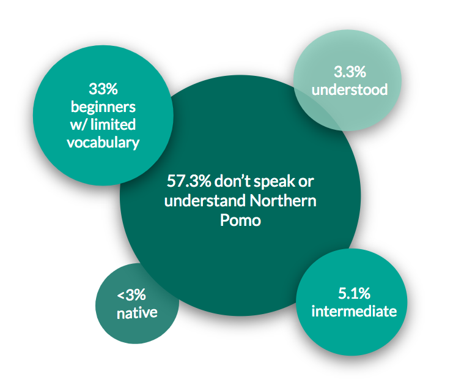
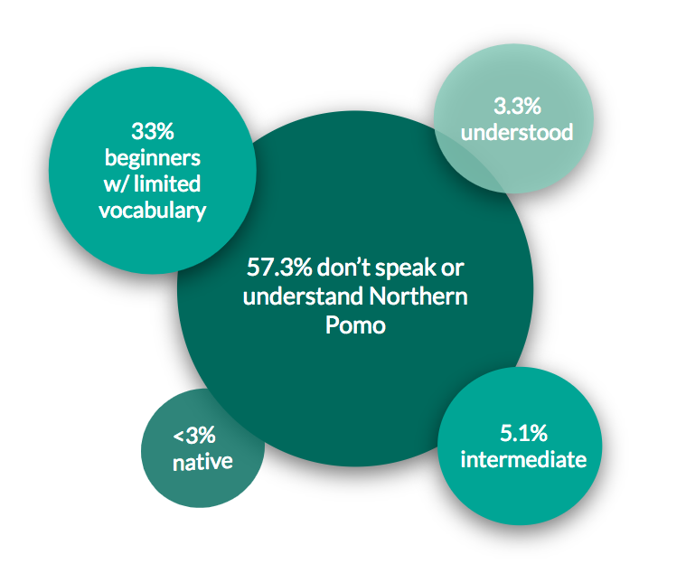

Project Overview
This website combines varied tools and resources for learning Northern Pomo vocabulary and grammar, with an emphasis on intuitive presentation and language assessments. I am using this template for which there is an existing website at Northern Pomo Language Tools for the Northern Pomo language based in Mendocino County, California.
Northern Pomo is an extinct language belonging in the Pomoan language family.
 

Goals
My main goal is to contribute new resources and tools absent on the existing Northern Pomo website for language learning. The reason that I am motivated to make efforts for language revitalization for Northern Pomo is due to the urgency for reviving this dormant language and ensuring that the documentation efforts since the 1980s are made accessible and repurposed into learning materials for those seeking to learn overview or revive Northern Pomo culture and language. My specific project goals are to:
- Provide accessible tools and resources for first-time learners of Northern Pomo
- Contribute to digitization efforts of documentation materials
- Add missing components of teaching methodology like assessments
The reason that I consider this project to be appropriate for this language situation is how this is a way to add accessible learning materials transformed from academic documentation. Since there are no more native speakers, the main connection to the language is from written work by linguists and the more recent efforts to digitize these materials. For anyone with an ancestral connection to or academic interest in learning Northern Pomo, the main entry way is thus technology that is both accessible and accommodating to different knowledge levels.
Content
The conceptual content of my project is focused on two web pages featuring a vocabulary list and quiz component that requires the user to match audio recordings to the English translation. Other rich linguistic content includes information on phonology and morphology, verbs and TAM, and other grammatical content that are referenced from Catherine O’Connor’s Topics on Northern Pomo Grammar.
Vocabulary List
Under the Vocabulary section is a list view that combines images, English and Northern Pomo glosses, and audio files to present all the information necessary to for self-guided vocabulary learning (source).
I considered a quiz when I read overview the importance of every lesson having an assessment portion. In wanting to incorporate the audio files, I thought of having the user see a word, produce it verbally and check with the audio. The mobile app for Northern Pomo actually has as Quiz section that’s absent on the website. Similarly, in this webpage version under the Assessments section, the user sees 3 pictures and an audio recording is played for which the user must select the matching picture or word (source).
Methodologies
The main models and methodologies that I am using to develop this project are:
1. Communication-Based Language Instruction or CBI’s 5-step lesson plan helped me determine what is missing from the current website. Specifically, the steps are setting the stage with motivators or lesson previews, which could be mapped to the “Overview” page. Then there is comprehensible input or vocabulary learned through repetition and hearing, to which I find the current “Lessons and Flashcards” page conductive. Third is guided practice via activities, and this being so open-ended prompted me to find ways to use games in addition to the existing flashcards that could reinforce concepts and help with memorization. Fourth is independent practice where students generate the language, and for this, a list of corresponding words to audio solutions would be useful. Lastly are assessments, which I will add in the form of MCQ since they don’t yet exist on the website.
2. Hinton’s guideline for comprehension before production to determine what area to focus on -- I chose the former. Also, the models for planning lessons reinforced the importance of a review component for each lesson.
Getting Started
Vocabulary
The vocabulary list can be filtered by categories
Grammar
Introduction to Northern Pomo phonology and morphology
Audio files
The audio files are from native speakers
Assessments
Check your understanding with quizzes!